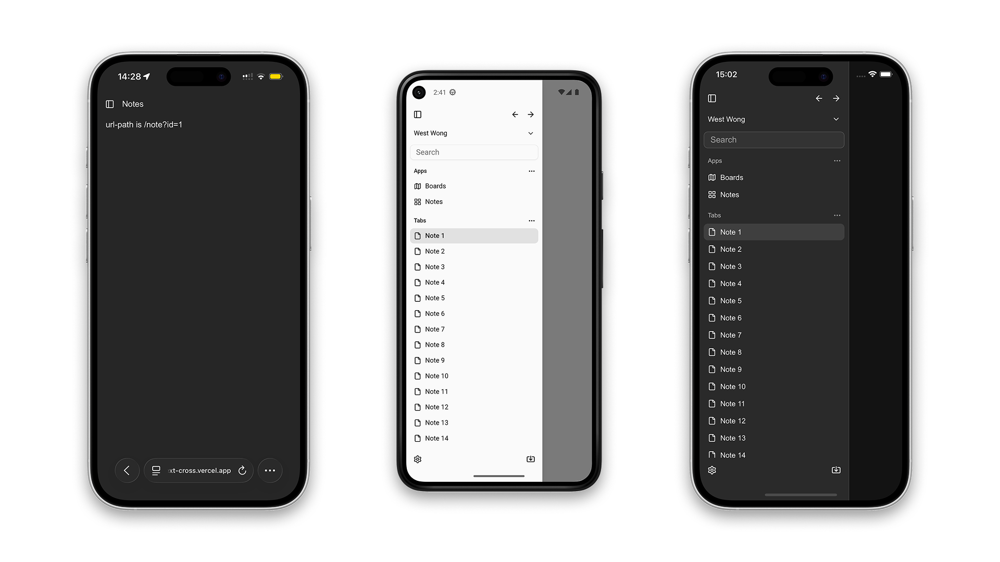
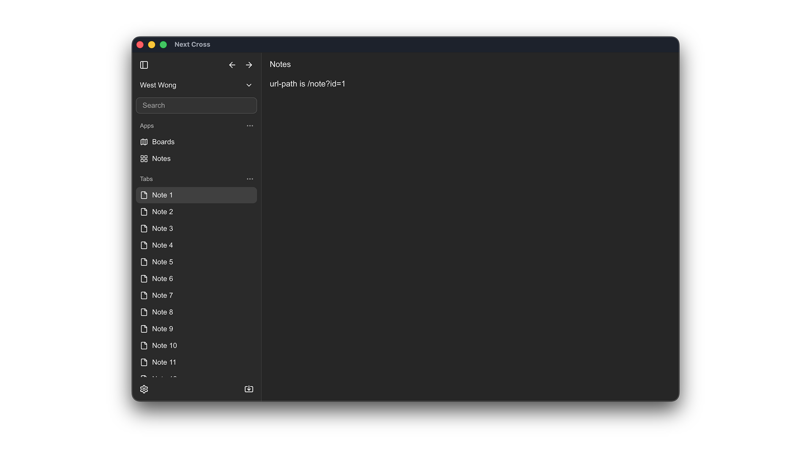

基于 Web 技术栈的跨端开发模版 (Next)
一份代码，三端运行：基于 Web 技术的跨平台应用开发模板
GitHub 仓库：makeonteam/template-next-cross
大家好，今天给大家分享一个我们团队开源的跨平台应用开发模板 —— Template Next Cross。这是一个基于 Next.js、Electron 和 Capacitor 的应用模板，能让你用一套代码同时构建网页、桌面和移动应用。


在线体验
想要直接体验效果？访问我们的 在线演示，感受这个模板的实际运行效果。
为什么要做这个模板？
作为开发者，我们经常面临这样的挑战：需要同时开发多个平台的应用，但维护多套代码库成本高昂。使用 Web 技术构建跨平台应用是一个理想的解决方案，但配置环境、解决平台兼容性问题往往十分耗时。
我们的模板旨在解决这个痛点，让你专注于业务逻辑而非环境配置。
核心特性
- 一套代码，三端运行：Web、桌面（Windows/macOS/Linux）和移动端（iOS/Android）
- 现代化技术栈：Next.js + React + TypeScript + TailwindCSS + Shadcn/ui
- 开发体验优先：集成 Biome 进行代码检查和格式化，开发流程顺畅
- 开箱即用的配置：自带主题切换，解决了移动端安全区域问题
技术实现
- Web 应用：基于 Next.js 构建（启用了 export 参数）
- 桌面应用：使用 Electron 将 Web 应用打包为原生桌面应用
- 移动应用：利用 Capacitor 将 Web 应用打包为原生移动应用
快速上手
- 克隆仓库
git clone git@github.com:makeonteam/template-next-cross.git
cd template-next-cross
- 安装依赖
pnpm install
cd desktop && yarn install
cd ../mobile && yarn install
- 开发运行
# Web 应用
pnpm dev
# 桌面应用
cd desktop && pnpm dev
# 移动应用
pnpm build
cd mobile
npx cap sync
npx cap open android # 或 npx cap open ios
开源贡献
这个项目是完全开源的，我们欢迎任何形式的贡献和反馈。无论是提出新功能建议、报告 bug，还是提交代码改进，都将帮助我们打造更好的跨平台开发工具。
GitHub 仓库：makeonteam/template-next-cross
如果你正在寻找一个高效、现代化的跨平台应用开发方案，不妨试试我们的模板，让你的开发效率提升一个档次！
Copyright © 2015 Powered by MWeb, Theme used GitHub CSS.